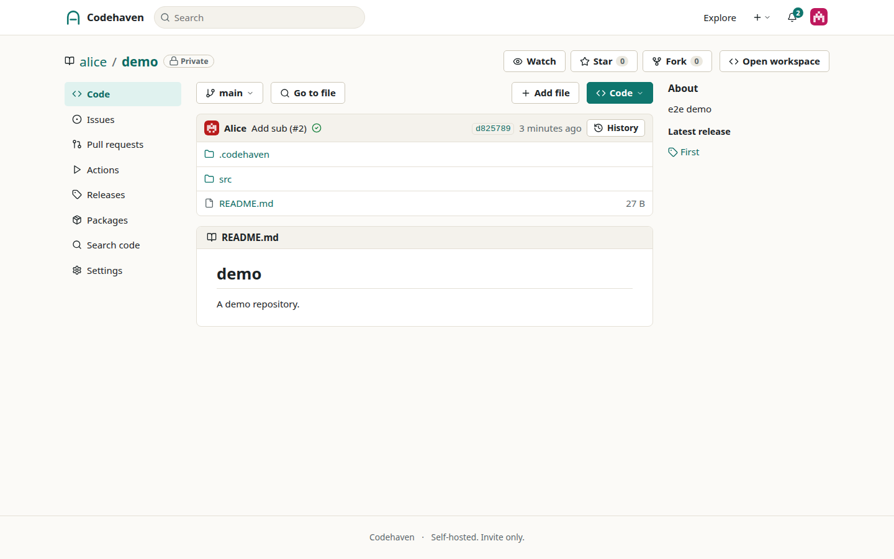
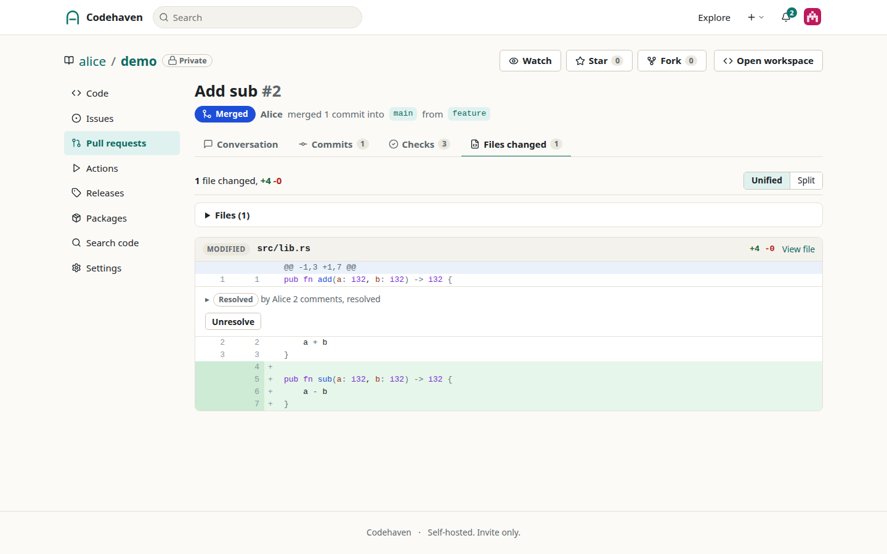

Codehaven
A self-hosted code forge written in Rust.
It hosts git over HTTP and SSH and has issues, pull requests with review, CI with registered runners, releases, packages and a container registry.

Why Codehaven
It is made to be run by anyone, on a machine you control.
Self-hosted
You run it on a Linux machine with Docker. The server is one binary, with Postgres beside it, and everything builds and runs in containers, so the host needs neither Rust nor PostgreSQL.
Invite-only
There is no sign-up page. The first account is made on the server with one command, and every account after it comes from an invite.
Private by default
A repository starts private; its owner can widen it to every signed-in account on the server, or to anyone on the internet while the site admin allows public repositories.
Nothing from another site
The browser workspace is served entirely by your instance: every file the editor needs comes from it, with nothing loaded from another site.
What it does
One server for the whole loop: push, review, build, release.
Issues and pull requests
Issues, and pull requests with review.
Read more about Issues and pull requestsCI with runners
Register a runner and run workflows written in GitHub Actions syntax. Real, unmodified actions from GitHub run on it, such as checkout, setup-node, cache and upload-artifact. A few need things jobs do not get here, and the CI page says which.
Read more about CI with runnersReleases, packages, registry
Publish releases and packages, and keep container images in a built-in registry.
Read more about Releases, packages, registryPages
Publish a static site from a branch, from its root or its docs folder. A failed copy says why and the last good one keeps serving.
Read more about PagesBrowser workspace
An editor (Monaco) with a file tree, tabs, search and diff, many-file commits, live workflow runs, and a bash terminal that runs in your browser.
Read more about Browser workspaceClaude connector
Connect Claude over OAuth and MCP, within exactly what you allow. It is off until an operator turns it on.
Read more about Claude connectorThree visibility tiers
A repository is private, internal or public. Public means anyone, only while the site admin allows public repositories.
Read more about Three visibility tiersBackups
Back up and restore with one script each, to a directory outside the checkout. Upgrade and rollback are covered too.
Read more about BackupsWho can see a repository
A repository starts private; its owner can widen it to every signed-in account on the server, or to anyone on the internet while the site admin allows public repositories.
- PrivateOnly people who are granted access.
- InternalAlso every signed-in account on the server.
- PublicAlso anyone on the internet, while the site admin allows public repositories.
The tiers are described in the repositories guide. Nobody who is signed out can open a workspace page, even for a public repository.
Quick start
You need a Linux machine with Docker (Compose 2.24 or newer, and buildx), git, openssl, curl, python3 and iproute2, 4 GB of memory and 20 GB of free disk. You do not need Rust or PostgreSQL on the host. Everything builds and runs in containers.
git clone https://github.com/aaron777collins/codehaven-forge codehaven && cd codehaven
cp .env.example .env # set the URL, the paths and the proxy
sudo bash deploy/prod/setup.sh # checks the host, makes the directories and secrets
sudo bash deploy/prod/up.sh # builds the images and starts the instance
sudo bash deploy/prod/first-admin.sh <username> <email>first-admin.sh prints a link that works once, for one hour. Open it, choose a password, then turn
on two-factor sign-in in Settings (site admin pages and the Claude connector need it). The script refuses to run when any account exists, and it never deletes
one.
The first build compiles the server, so it takes a while. Setup generates the database password once and never prints it, and the server makes its own master key on first start.
Next steps (a first repository, a pull request, a first CI run, a backup) are in
docs/getting-started.md.
The full walk-through, including the proxy, the first admin and the first push, is in Getting started.
Screenshots
Real pages from a test instance, with invented data: the users alice and root, the repository alice/demo and the organization acme.




Documentation
Install and run it, use it, fix it, and how it is built.
License and source
Codehaven is MIT licensed. The source, the issue tracker and the release history are on GitHub.